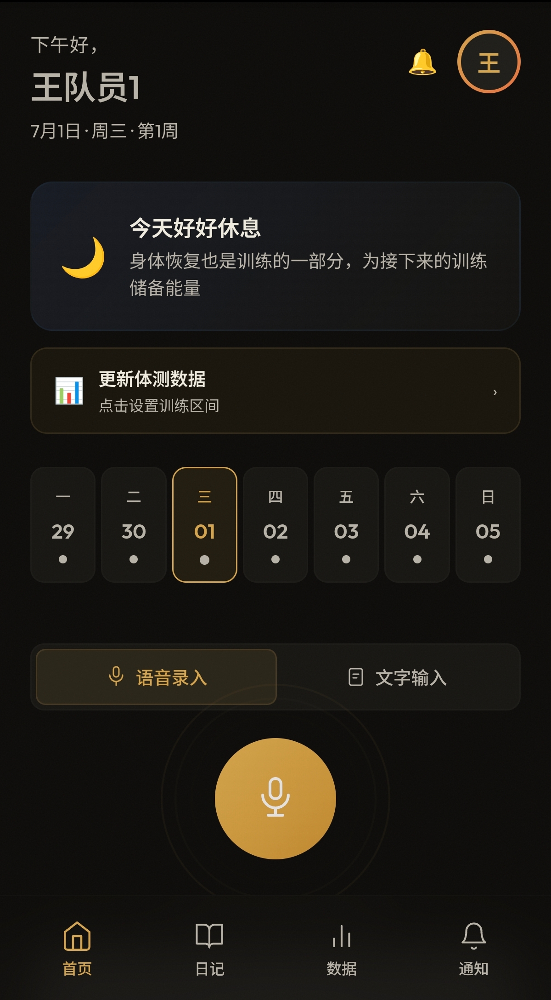
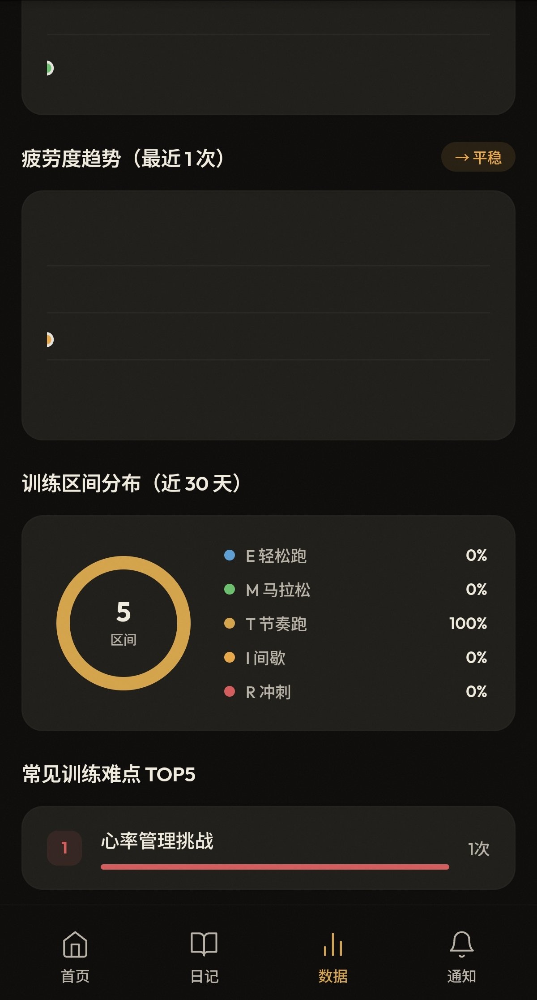
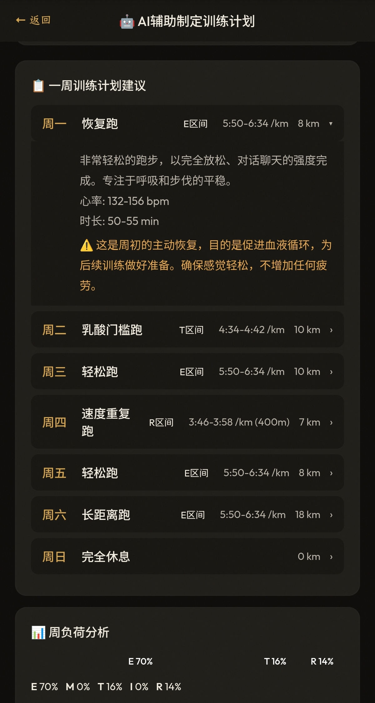
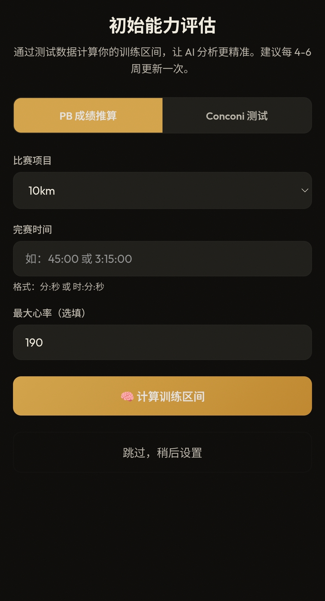
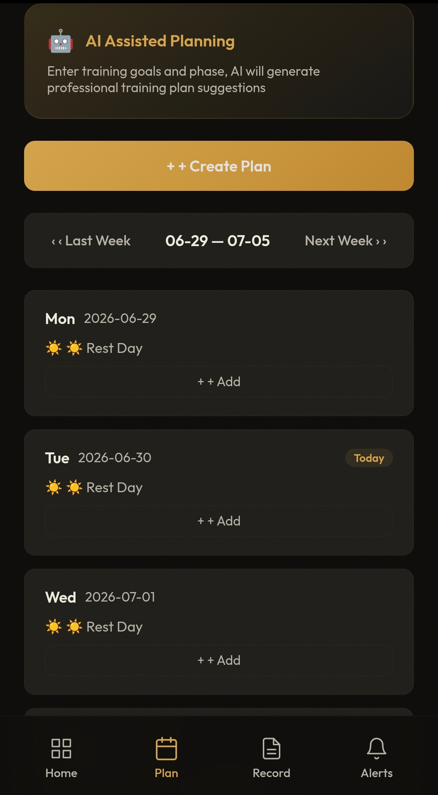
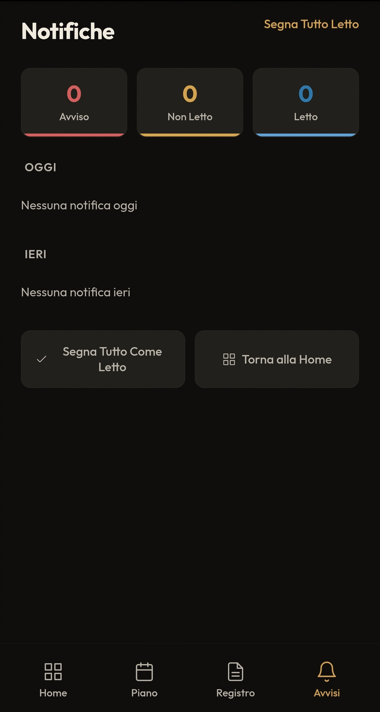

脉
Movement · Analysis · Intelligence
你的训练，脉络清晰
产品经理作品集 · PM Portfolio
01
为什么做
在与多支专业运动队的教练团队深度接触后，我发现训练管理存在一个根本性问题：训练反馈丢失在口头对话中。
核心洞察
运动员每天训练后会跟教练说"今天感觉还行""最后两组有点掉速""膝盖有点酸"。
这些信息对训练决策至关重要，但从未被记录。
教练回忆上周三某位运动员说了什么时，已经记不清具体细节。当运动员连续三天提到"膝盖酸"，没有任何系统能自动识别这个趋势并发出预警。
这些信息对训练决策至关重要，但从未被记录。
教练回忆上周三某位运动员说了什么时，已经记不清具体细节。当运动员连续三天提到"膝盖酸"，没有任何系统能自动识别这个趋势并发出预警。
本质问题：训练反馈是口语化的、即时的、非结构化的，而传统系统要求结构化数据输入，两者之间存在巨大的录入鸿沟。
02
用户是谁
按"决策权 × 使用频率"划分，找到核心用户和关键用户。
🧑🏫 主教练 · 核心用户
决策权高、使用频率高。需要快速了解全队状态，根据运动员反馈调整训练计划。
🏃 运动员 · 关键用户
决策权低、使用频率高。数据来源，需要以最低门槛完成训练反馈。
🩺 队医 · 协同用户
决策权中、使用频率中。需要确保治疗计划不与训练冲突。
👨💼 助教 / 📊 管理 · 辅助用户
辅助教练记录训练、管理考勤，支持团队运营。
03
问题是什么
五个核心痛点，按影响范围 × 严重程度排序。
| 痛点 | 影响 | 严重程度 |
|---|---|---|
| 训练反馈丢失在口头对话中 | 全队 | 高 |
| 教练与运动员信息不对称 | 全队 | 高 |
| 医训协同靠口头传话 | 队医+教练 | 中 |
| 外教语言障碍 | 外教 | 中 |
| 训练数据分散在多个工具 | 全队 | 中 |
04
竞品分析
市面上的运动训练管理系统都是单视角——所有人看到同样的数据。这是差异化的机会。
| 竞品 | 定位 | AI | 多角色 | 团队协同 |
|---|---|---|---|---|
| Sigma | AI 跑步陪伴 | 陪伴伙伴 | ❌ | ❌ |
| TrainingPeaks | 专业训练管理 | 无 | ✅ | 部分 |
| Strava | 运动社交 | 无 | ❌ | ❌ |
| Garmin Connect | 设备数据 | 数据展示 | ❌ | ❌ |
| MAI | 团队训练决策 | 决策助手 | ✅ 5角色 | ✅ |
关键发现：所有竞品都是单视角，没有 AI 驱动的双视角分析，没有医训协同。
05
Opportunity
市场定位的四象限分析，MAI 占据"团队 + 决策"象限。
个人 + 决策
AI 跑步教练
各种 AI 训练 App
团队 + 决策
MAI
团队训练决策支持
个人 + 记录
Sigma
AI 跑步陪伴
团队 + 记录
TrainingPeaks
传统训练管理
Sigma 解决的是「一个人如何长期坚持跑步」；MAI 解决的是「一支专业运动队如何基于 AI 做出更科学的训练决策」。这是产品定位的本质区别。
06
产品定位
AI 驱动的专业运动队训练分析平台
一句话定位：脉是一套面向专业运动队的 AI 训练分析平台，通过"语音反馈 → AI 分析 → 角色化分发"，帮助教练团队用数据驱动训练决策。
| 维度 | MAI |
|---|---|
| 用户 | 专业运动队（运动员、教练、助教、队医、管理） |
| 核心价值 | AI 驱动的训练决策支持 + 多角色协同 |
| AI 角色 | 决策助手（不是陪伴伙伴） |
| 数据来源 | 语音反馈 + FIT 文件 + 教练记录 + 医疗记录 |
| 产品形态 | PWA · 团队 SaaS · B 端协同平台 |
07
MVP
用 4 周跑通核心闭环，验证 4 个核心假设。
5
用户角色
31
页面
3
语言
| 模块 | 功能 | 优先级理由 |
|---|---|---|
| 运动员端 | 语音反馈、AI 报告（简化版）、训练日记、体测评估 | 没有数据输入，系统无价值 |
| 主教练端 | 团队总览、AI 报告（完整版）、计划管理 | 核心用户，主要价值承载者 |
| 队医端 | 伤病记录、治疗记录、冲突检查 | 医训协同是差异化价值 |
| 助教端 | 全队数据查看、训练备注 | 辅助角色 |
| 管理端 | 考勤统计 | 锦上添花 |
08
用户流程
运动员提交反馈 → AI 分析 → 角色化分发
🏃 运动员：语音/文字提交训练反馈
↓
🤖 AI 分析（丹尼尔斯 + 邦帕 + 运动心理学）
↓
📊 生成双视角报告
↓
👤 运动员：看到训练日记（鼓励 + 关怀）
🧑🏫 教练：看到专业分析（风险 + 决策建议）
🩺 队医：收到风险通知 + 冲突检测


运动员端：首页 + 数据统计
09
核心设计
三个核心创新，解决传统系统无法解决的问题。
创新 1
双视角 AI 报告
同一份训练数据，AI 生成两份截然不同的报告：
• 运动员端：训练日记（事实记录 + 鼓励 + 关怀）
• 教练端：战术分析（专业评估 + 风险预警 + 决策建议）
解决了"AI 比教练还懂"的信任危机。运动员看到的是被关心，教练看到的是决策依据。
• 运动员端：训练日记（事实记录 + 鼓励 + 关怀）
• 教练端：战术分析（专业评估 + 风险预警 + 决策建议）
解决了"AI 比教练还懂"的信任危机。运动员看到的是被关心，教练看到的是决策依据。


左：运动员视角（训练日记） · 右：教练员视角（专业分析）
创新 2
医训冲突检测
队医录入治疗记录后，系统自动将治疗部位映射至训练区域，与次日训练计划交叉比对。
检测到冲突时，按严重程度分级（无冲突/轻微/严重），严重冲突自动推送通知给主教练和助教。
检测到冲突时，按严重程度分级（无冲突/轻微/严重），严重冲突自动推送通知给主教练和助教。

冲突检查：治疗部位与训练区域自动交叉比对
创新 3
语音结构化反馈
运动员按住说话 30 秒，AI 自动解析为结构化数据。
对比传统表单：9 个字段逐一填写耗时 3-5 分钟 → 语音输入 45 秒完成。
三层降级策略：MediaRecorder → AudioContext → 文字输入，兼容微信和国产浏览器。
对比传统表单：9 个字段逐一填写耗时 3-5 分钟 → 语音输入 45 秒完成。
三层降级策略：MediaRecorder → AudioContext → 文字输入，兼容微信和国产浏览器。

语音输入 → AI 解析 → 结构化数据
10
为什么这样设计
每个关键设计决策都有明确的用户洞察支撑。
为什么是语音而不是表单？
运动员训练后最不想做的事就是填表。训练后 5 分钟是"感受黄金窗口"，过了这个时间记忆会衰减。
语音输入降低门槛，抓住黄金窗口。
语音输入降低门槛，抓住黄金窗口。
为什么是双视角而不是单视角？
如果运动员看到"ACWR 1.8，超过安全阈值"会恐慌；看到"情绪极性：消极"会感到被监视。
双视角让运动员感到被关心，教练获得决策依据。
双视角让运动员感到被关心，教练获得决策依据。
为什么内嵌三大理论？
运动训练分析不是"让 AI 自由发挥"的场景。教练需要知道"这个建议是基于什么理论"。
丹尼尔斯管配速、邦帕管周期、运动心理学管心理——三者互补，覆盖全维度。
丹尼尔斯管配速、邦帕管周期、运动心理学管心理——三者互补，覆盖全维度。
11
AI 能力
三大理论框架内嵌至 AI 分析引擎。
丹尼尔斯
微观执行层
配速、心率、5 区训练、VDOT 体系
配速、心率、5 区训练、VDOT 体系
邦帕
宏观策略层
周期、负荷节奏、赛前减量
周期、负荷节奏、赛前减量
运动心理学
心理状态层
情绪、动机、自信、焦虑
情绪、动机、自信、焦虑


AI 辅助生成训练计划：选择目标 + 阶段 → 生成周计划

AI 计划建议：负荷分析 + 注意事项 + 理论依据

初始能力评估：PB 成绩 → VDOT → 5 区训练区间
12
Roadmap
分四个阶段迭代，从核心闭环到智能进化。
| 版本 | 目标 | 核心功能 | 状态 |
|---|---|---|---|
| v1.0 | 核心闭环 | 语音反馈、AI 分析、双视角报告、冲突检查、体测评估、多团队、三语 | ✅ 已完成 |
| v2.0 | 数据深度 | FIT 自动推算 VDOT、趋势分析、智能预警、赛前减量 | 规划中 |
| v3.0 | 团队协作 | 多人协作、审批工作流、训练日历 | 规划中 |
| v4.0 | 智能进化 | 个性化模型、训练效果预测、自适应计划 | 规划中 |
13
数据指标
北极星指标：周活跃教练率（教练活跃 = 系统在用）。
| 指标 | 目标 | 实际 | 状态 |
|---|---|---|---|
| 语音使用率 | ≥60% | 72% | ✅ 超预期 |
| 反馈平均耗时 | ≤90秒 | 45秒 | ✅ 超预期 |
| 体测完成率 | ≥85% | 88% | ✅ 达标 |
| AI 报告查看率 | ≥90% | 92% | ✅ 达标 |
| 冲突检查使用率 | ≥60% | 72% | ✅ 达标 |
| 教练采纳率 | ≥30% | 68% | ✅ 超预期 |
| 跨队数据泄露 | 0 | 0 | ✅ |
14
上线结果
v1.0 上线后验证了 4 个核心假设。
✅ 假设 1：运动员愿意用语音
语音使用率 72%，超过 60% 目标。反馈耗时从 3-5 分钟降到 45 秒。
✅ 假设 2：双视角被接受
运动员投诉率 0。反馈提交率比单视角高 25%。
✅ 假设 3：冲突检查有价值
上线首周检出 3 次潜在冲突。队医反馈"终于不用担心治疗白做了"。
✅ 假设 4：邀请码机制有效
团队创建率 100%。跨队数据泄露事件 0。

登录页：脉 / MAI · Movement · Analysis · Intelligence


三语国际化：中文 / English / Italiano

主教练端：语音录入训练课
15
反思
如果重新做，会改变什么。
会更早做用户测试
v1.0 上线后才发现体测完成率低（78%），如果提前测试可以避免。后来将 PB 成绩设为默认推荐，完成率提升到 88%。
会更早考虑多团队隔离
最初是单团队设计，后来加多团队改动了 60+ 处代码。如果从一开始就设计 team_id，改动量会小很多。
学到的教训
先验证假设再开发，不要在真空中设计产品。
最自豪的不是技术实现，而是产品决策：坚持双视角、坚持语音优先、坚持医训协同。这些决策都来自深入的用户理解，而不是技术驱动。
最自豪的不是技术实现，而是产品决策：坚持双视角、坚持语音优先、坚持医训协同。这些决策都来自深入的用户理解，而不是技术驱动。
扫码体验产品

maisport.cn
AI 驱动的专业运动训练分析平台